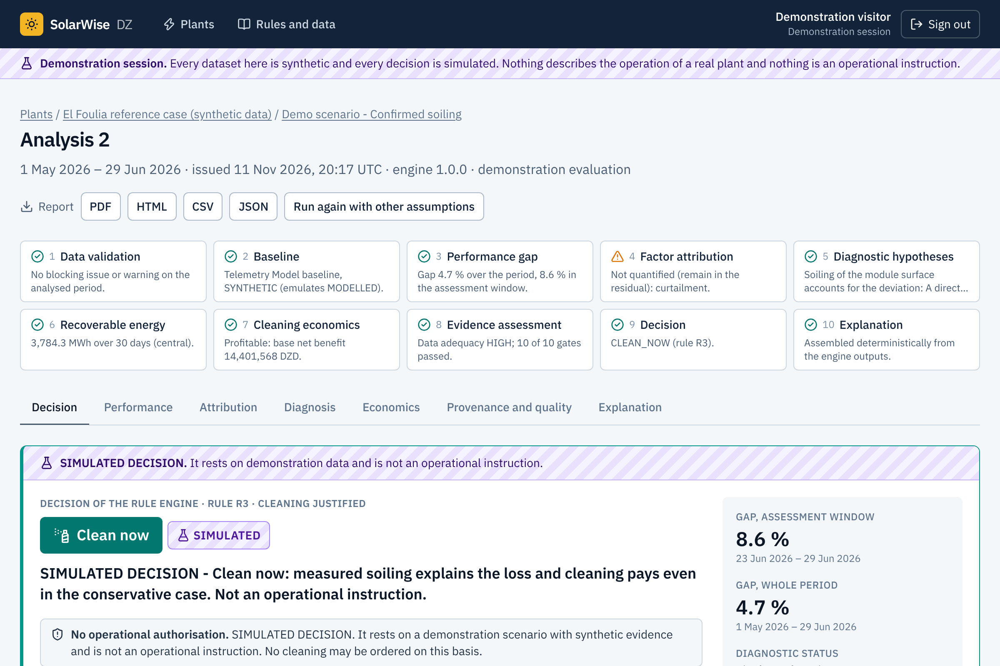
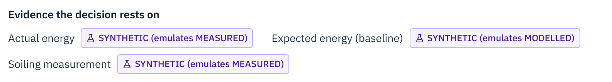
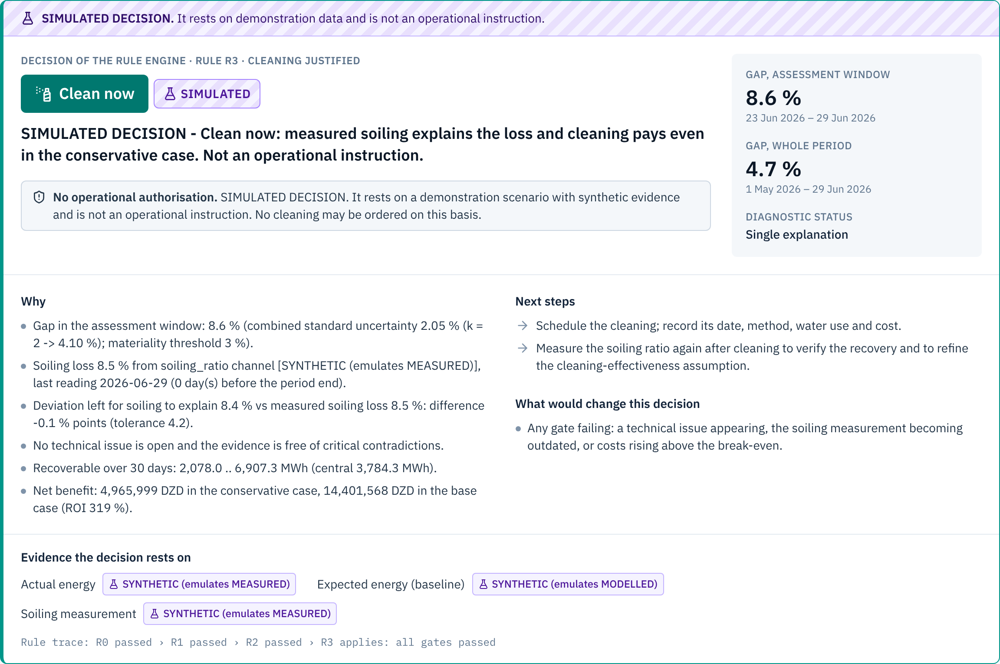

DZ
Know why a solar plant
Decision support for photovoltaic plants in the Algerian south. It explains the production gap, then tells whether a cleaning is justified.
solarwise-dz · analysis · confirmed soiling

Introduce yourself in one sentence, then:
This is SolarWise DZ. It tells the operator of a solar plant why the plant is producing less than expected, before anyone decides to send the cleaning crews.
The problem
Production is down 9 %.Is it dust?
In the Sahara, dust really does cut output. But heat, a fault, shading, curtailment or bad data give the same picture on the meter.
−8.4 %
power after 8 weeks without cleaning, measured at Ouargla ¹
300 MWp
El Foulia (El Oued), Algeria's largest solar plant, inaugurated in October 2026 ²
15,000 MW
of solar capacity planned by Algeria for 2035 ²
Actual against expected energy · last 7 days
−9 %
Six possible causes. One meter reading.
Dust on the modules ?
Heat ?
Inverter fault ?
Shading ?
Grid curtailment ?
Missing or wrong data ?
Clean for the wrong reason: water, labour and money are spent, and nothing is recovered.
Wait when it really is dust: energy is lost every day.
DZ
¹ Dida et al., Renewable and Sustainable Energy Reviews 124 (2020), field measurements at Ouargla. ² pv magazine France, 28 October 2026.
On the 26th of October, Algeria inaugurated El Foulia, its largest solar plant: 300 megawatts in El Oued. And in the Sahara, dust is real. At Ouargla, researchers measured 8 percent less power after only eight weeks without cleaning.
Now picture the control room. Production is 9 percent below expected. Is it dust? Maybe. But heat, an inverter fault, shading, grid curtailment or bad data look exactly the same on the meter.
Clean for the wrong reason, and you spend water and money for nothing. Wait when it really is dust, and you lose energy every day.
Our solution
SolarWise DZ answers three questions, in order.
It reads production data, soiling measurements, maintenance logs, inspections and your own costs, each with its declared origin.
1
How much is missing?
Actual energy against a documented baseline. The gap counts only when it exceeds the measurement uncertainty.
The gap, with its uncertainty
2
Why?
Each cause is quantified only from data that measure it: downtime, equipment, curtailment, soiling sensor. The rest stays “unexplained”.
The causes, with their evidence
3
Does cleaning pay?
The energy a cleaning would recover, at its value, against the full cost of cleaning. It must pay even in the conservative case.
The net benefit, from low to high
One answer,
Every gate is passed: the cleaning is justified and it pays.
Something is unknown, open or contradictory. Find out first.
Nothing to act on now. The analysis is repeated later.
DZ
SolarWise DZ answers three questions, in order.
One: how much is really missing, against a documented baseline and beyond the measurement uncertainty.
Two: why. Each cause is quantified only from data that actually measure it. What we cannot explain stays “unexplained”.
Three: does cleaning pay. The energy we would recover, against the full cost of cleaning.
The result is one of three answers: clean now, investigate, or monitor. Always with its reasons.
Question 2 · Why?
Every kilowatt-hour of the gap is accounted for,
From expected to actual energy
Scenario “confirmed soiling”, 23 to 29 June 2026 · gap −0.99 GWh (−8.6 %)
GWh · axis starts at 9.9
10.0
10.5
11.0
11.5
11.55 GWh
−0.02 GWh0.2 %
−0.98 GWh8.5 %
+0.01 GWh0.1 %
10.56 GWh
Expected
Equipment
Soiling
Unexplained
Actual
8.5 %
Measured by the soiling sensor. It is not deduced from the gap.
8.4 %
Left for soiling to explain once the equipment losses are removed. The two agree.
0.1 %
Unexplained. Nothing is hidden inside “soiling”.
Sunshine and temperature are already inside the expected energy. Performance metrics follow IEC 61724-1.
DZ
Synthetic demonstration scenario on the El Foulia reference case. It contains no measurement from any real plant.
Here is the second question, on a simulated case. Expected energy on the left, actual energy on the right.
The soiling sensor reads eight and a half percent. The loss left to explain, once equipment is removed, is eight point four. They agree. And only a tenth of a percent stays unexplained.
The key point: soiling is measured. It is never guessed from the gap.
Question 3 · The decision
A cleaning order has to pass ten gates.
The data
1 Reliable measured production data
2 Baseline of documented origin
The loss
3 Significant under-performance now, beyond the uncertainty
The soiling
4 Credible measured soiling evidence
5 Soiling consistent with the production gap
Nothing else
6 No unresolved technical issue
7 No critical contradiction in the evidence
The money
8 Recoverable energy estimated
9 Complete economic inputs
10 Profitable in the conservative case
10 of 10
Measured loss, explained by measured soiling, nothing else open, and a cleaning that pays.
Anything less
A gate that cannot be evaluated counts as not passed.
Explicit rules: same data, same answer.
Every result is stored as issued.
An independent interlock re-checks every “Clean now”.
DZ
Then comes the decision. A cleaning order has to pass ten gates: reliable measured data, a real loss, credible soiling evidence that matches this loss, nothing else open, and economics that hold in the conservative case.
Ten out of ten: clean now. Anything less: investigate, or monitor.
These are explicit rules, not a black box. Same data, same answer. And an independent check verifies every cleaning order a second time.
What it changes
Six cases with the same 9 % drop. One cleaning order.
Dust, measured
The soiling sensor reads 8.5 %. It matches the gap, and the cleaning pays.
Heat
Module temperature explains 91 % of the gap. Cleaning would change nothing.
Inverter fault
Part of the plant is not producing. Repair first: cleaning would not recover it.
Morning shading
The sensor shows a clean array and 8.7 % stays unexplained. Check on site.
Grid curtailment
The grid limited the output. Cleaning would not bring that energy back.
Conflicting evidence
An inspection reports heavy soiling, the sensor reads 1 %. Resolve it first.
A rule of thumb, “gap above 5 %: clean”,
Gap over the last 7 days of each scenario
DZ
Synthetic demonstration scenarios on the El Foulia reference case. They contain no measurement from any real plant.
So what does it change? Here are six simulated cases, all with about nine percent less production. A simple threshold would clean six times.
SolarWise DZ says clean once: when the dust is measured and the cleaning pays.
Heat, or curtailment: cleaning changes nothing, so we monitor. An inverter fault: repair it first. Shading, or evidence that contradicts itself: investigate.
Five needless cleanings avoided. And each time, the operator knows what to do instead.
Does cleaning pay?
Same cleaning cost. Opposite answers.
Dry weeks ahead Soiling measured at 8.5 %.
Cost of the cleaning
4.5 M DZD
Energy recovered
18.9 M DZD
+14.4 M DZD
Net benefit. Still +5.0 M DZD in the conservative case.
10 gates of 10 passed. The cleaning is justified.
Rain expected within days Soiling measured at 5.4 %.
Cost of the cleaning
4.5 M DZD
Energy recovered
1.2 M DZD
−3.3 M DZD
Net loss. Still −1.1 M DZD in the optimistic case.
9 gates of 10 passed. Gate 10 fails: the cleaning does not pay.
The test is conservative: low recoverable energy against high cost. The net benefit must stay positive.
No price is built in. The operator enters water, labour, equipment, downtime and the value of a kWh.
Simulated scenarios with illustrative assumptions (5 DZD per kWh). These are not market prices.
DZ
Synthetic demonstration scenarios on the El Foulia reference case. Benefit and cost in the base case, in Algerian dinars.
And even real dust does not always justify a cleaning. The cleaning cost is the same in both cases.
On the left, dry weeks ahead: the cleaning recovers about four times its cost. Clean now.
On the right, rain is expected within days: the cleaning would lose money. So we wait.
The prices are the operator's own: nothing is built in. The figures here are illustrative.
Why you can trust the answer
Four rules the software never breaks.
A gap is not a diagnosis Lower production is an observation. It never proves soiling by itself.
Every value has an origin Measured, modelled, synthetic or unknown: declared with the data and shown with every figure. Only measured data can justify a cleaning.
Rules decide. AI only explains. A deterministic rule engine decides. An optional language model may only interpret its findings, and its text is checked against the engine's result.
Missing stays missing A value that was not observed is never replaced by zero and never interpolated.
In the application
Every decision shows the origin of the evidence it rests on.

DZ
Why trust the answer? Because of four rules the software never breaks.
A gap is not a diagnosis. Every value carries its origin, and only measured data can justify a cleaning. Rules decide: an AI model may only interpret and explain what the engine found. And a missing value stays missing: it is never replaced by zero.
If you are short of time, this is the slide to shorten: read the four titles only.
Where we are
A working application, not a mock-up.
solarwise-dz · analysis · decision

10
demonstration scenarios , each one giving the decision it should
1,257
automated tests : 1,135 on the engine and the API, 122 on the interface
54
API operations behind a web interface, with accounts and roles
4
report formats : PDF, HTML, CSV and JSON. Every result is stored as issued
Validated on synthetic scenarios. It has not yet been run on the data of a real plant.
DZ
And this is a working application, not a mock-up. A web interface and an API. Ten demonstration scenarios. More than twelve hundred automated tests. Reports in four formats.
We are also clear about its limit: so far, it has been validated on synthetic data only.
If you may show the live demonstration, do it here: open the demonstration, then the plant, then the analysis “Confirmed soiling”.
Next steps
From demonstration to a pilot plant.
1 Pilot Run on the real production exports of one plant.
2 Calibrate Tune thresholds and uncertainties with the operator's engineers.
3 Connect Soiling stations and weather feeds. The PVGIS and NASA POWER connectors are already built.
4 Scale More plants, an interface in Arabic and French, planning of cleaning campaigns.
What we are looking for
One plant's historical data, and an operator ready to test it with us.
What the operator gets
An evidence file for every cleaning decision: what was measured, what was assumed, and whether the cleaning pays.
DZ
So the next step is a pilot. One plant's historical data, to calibrate the thresholds with its engineers. Then soiling stations, weather feeds, and more plants.
That is what we are looking for today: an operator ready to test it with us.
DZ
Clean when the evidence says so.
How much is missing. Why. Whether cleaning pays.
Thank you.
SolarWise DZ. Clean when the evidence says so. Thank you.
Leave this slide on the screen during the questions. The slides after it are backups.
Backup · The decision rules
The rules are applied in this order. The first that applies decides.
Rule
Applies when
Outcome
Why
R0
Production data are not reliable measured data, or the baseline is not documented.
Without trustworthy production and a known reference there is no gap to reason about.
R1
A technical issue is open in the assessment window.
Its losses cannot be separated from soiling, and cleaning would not recover them.
R2
The evidence contains a critical contradiction.
A decision resting on one of two contradicting sources would be arbitrary.
R3
Every one of the ten gates is passed.
Measured loss, explained by measured soiling, nothing else open, and a cleaning that pays.
R4
The deviation is significant and largely unexplained, and soiling is not credibly measured.
A production gap alone does not prove soiling.
R5
Soiling is measured and matches the deviation, but the economic inputs are not decision-grade.
It cannot yet be shown that cleaning pays.
R6
None of the above: no significant deviation, a cause that cleaning does not change, or a cleaning that would not pay.
Nothing to act on now. The analysis is repeated after the review interval.
Interlock
A “Clean now” is checked a second time, independently, against the gates and the origin of its evidence, and the check fails.
A programming error in the rules must not be able to issue a cleaning order.
DZ
Rule engine version 1.0.0. The same table is published by the application under “Rules and data”.
Use it when someone asks “how exactly is the decision taken?” or “why not machine learning?”.
The rules are checked in this order, and the first that applies decides. Only rule R3 can order a cleaning, and it needs all ten gates. A second, independent check must agree before the order goes out.
Backup · Architecture
From a file to a decision, in five steps.
Data in Plant exports in CSV or JSON. Each column: unit, origin, source.
Validation Units, gaps, duplicates, completeness. Missing stays missing.
Engines Gap, attribution, diagnosis, recoverable energy, economics.
Rule engine Ten gates, rules R0 to R6, and the safety interlock.
Results Decision, explanation, reports in PDF, HTML, CSV and JSON.
Built with
Python, FastAPI, SQLAlchemy, PostgreSQL or SQLite · React, TypeScript, ECharts
Optional connections
PVGIS typical year, NASA POWER weather, a language model that interprets the findings. All can stay switched off.
Access
Sign-up, which can be switched off. Roles for each plant: owner, editor, viewer. Sign-ins and changes are recorded.
Verified by
1,135 tests on the engine and the API, 122 on the interface, static typing and linting on both sides.
DZ
Use it for technical questions: stack, deployment, security.
The operator uploads the plant's own export. Its columns are recognised, and the operator declares where each one comes from. It is validated, then five engines compute the gap, the causes, the diagnosis, the recoverable energy and the economics. The rule engine decides. The result is stored as issued and can be exported as a report.
Backup · Demonstration
The ten demonstration scenarios and what the engine answers.
#
Scenario
Gap, last 7 days
Decision
Rule and reason
1
Normal operation
0.5 %
R6 · production is in line with the baseline
2
Confirmed soiling
8.6 %
R3 · every gate is passed
3
Temperature effect
8.9 %
R6 · explained by a cause that cleaning does not address
4
Inverter fault
10.6 %
R1 · a technical issue is open
5
Morning shading
9.2 %
R4 · a significant loss is not explained
6
Grid curtailment
10.1 %
R6 · explained by a cause that cleaning does not address
7
Missing data
6.5 %
R0 · the data are not sufficient to support a decision
8
Conflicting evidence
8.6 %
R2 · the evidence contradicts itself
9
Synthetic data, no role declared
8.6 %
R0 · the production data are not measured data
10
Unprofitable cleaning
5.8 %
R6 · soiling is measured, but cleaning now would cost more than it recovers
DZ
Synthetic scenarios, 1 May to 29 June 2026, generated from a fixed seed. Every decision is marked simulated in the application.
Use it when someone asks what the demonstration contains, or wants to see a case you did not show.
Scenario 9 uses the same numbers as scenario 2, but the file does not say that they stand for measurements. The answer changes from “clean now” to “investigate”: data of unknown origin can never justify a cleaning.
Backup · Limits
What the solution does not do yet, stated plainly.
Tested on synthetic scenarios only No measurement from El Foulia or from any other plant has been used. The name, the location and the nominal capacity are public information; everything else is an illustrative assumption.
Thresholds are documented defaults The 7-day window, the 2 % floor for a credible soiling reading and the other thresholds must be calibrated with each operator.
No direct soiling measurement, no cleaning order Without a soiling station, a clean reference module or an equivalent measurement, the answer is “Investigate”. This is by design.
The projections are not a validated forecast The application shows simple reference projections for orientation. They never enter a decision.
Weather services are context, not evidence PVGIS and NASA POWER data help to build a baseline. They do not measure the dust on the modules.
DZ
Use it when someone asks about real data, accuracy or validation. Saying these limits yourself is stronger than being asked.
We have not used real plant data yet: that is exactly what the pilot is for. And the software will never order a cleaning without a direct soiling measurement.